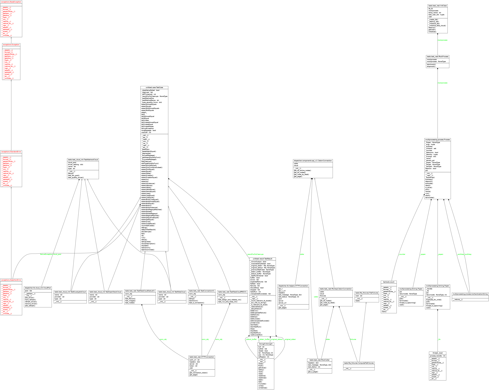

Test Coverage¶
Approccio¶
{kind=link}
I test sono svolti con due approcci differenti, col primo si verifica la connettivita’ e la funzionalita’ dei moduli, col secondo si verifica la funzionalita’ dei wrapper dei driver per il cloud, delegando il testing del funzionamento effettivo alla consolidata libreria libcloud su cui ci si basa pesantemente e per la quale esistono gia’ i test.
Per la documentazione relativa allo sviluppo di libcloud, copertura test, ed utilizzo generico e’ possibile scaricare la guida ufficiale o consultare il sito ufficiale .
Test REST¶
In questa unita’ di test vengono fatti dei test sulla connettivita’ sul web service per il recupero delle informazioni da dei cloud provider.
TestConnectionV1¶
Test sulla connettivita’ verso il webservice Orchestrator
- test connection
TestFakeCloudStatusV1¶
Test sul recupero informazioni legate allo status
- nodes
Test sul recupero informazioni legate ai flavors ( ossia l’aggregazione tra “cpu” / “disk” / “ram” )
- flavors
Test sul recupero informazioni legate alle immagini disponibili
- images
TestFakeCloudMNGV1¶
Test sull’avvio e lo spegnimento di una macchina virtuale
- test_run_and_close_vm
Test sull’assegnazione e rilascio di una macchina virtuale
- test_assign_and_release_vm
>>> python test_rest.py * Running on http://127.0.0.1:4009/ 127.0.0.1 - - [04/Feb/2015 15:23:29] "POST /api/v1/auth HTTP/1.1" 200 - 127.0.0.1 - - [04/Feb/2015 15:23:29] "PUT /api/v1/test/start HTTP/1.1" 200 - .127.0.0.1 - - [04/Feb/2015 15:23:29] "POST /api/v1/vm/start/fake_driver HTTP/1.1" 200 - 127.0.0.1 - - [04/Feb/2015 15:23:29] "PUT /api/v1/vm/action/assign/fake_driver HTTP/1.1" 200 - 127.0.0.1 - - [04/Feb/2015 15:23:39] "PUT /api/v1/vm/action/release/fake_driver HTTP/1.1" 200 - .127.0.0.1 - - [04/Feb/2015 15:23:39] "POST /api/v1/vm/start/fake_driver HTTP/1.1" 200 - 127.0.0.1 - - [04/Feb/2015 15:23:39] "PUT /api/v1/vm/stop/fake_driver HTTP/1.1" 200 - .127.0.0.1 - - [04/Feb/2015 15:23:39] "GET /api/v1/flavors/fake_driver HTTP/1.1" 200 - .127.0.0.1 - - [04/Feb/2015 15:23:39] "GET /api/v1/images/fake_driver HTTP/1.1" 200 - .127.0.0.1 - - [04/Feb/2015 15:23:39] "GET /api/v1/nodes/fake_driver HTTP/1.1" 200 - . ---------------------------------------------------------------------- Ran 6 tests in 10.482s OK
Test Cloud¶
In questa unita’ di test vengono fatti due tipi di test che vengono ripetuti per eretidarieta’ sulle classi specifiche per il controllo dei cloud provider
Dopo il caricamento del driver nel pool restituisce il numero di oggetti correttamente caricati
- test_len_pool
Qui si verifica che il driver effettivamente caricato sia quello che si e’ chiesto di caricare
- test_quality_driver
>>> python test_cloud_init.py ...... ---------------------------------------------------------------------- Ran 6 tests in 0.002s OK